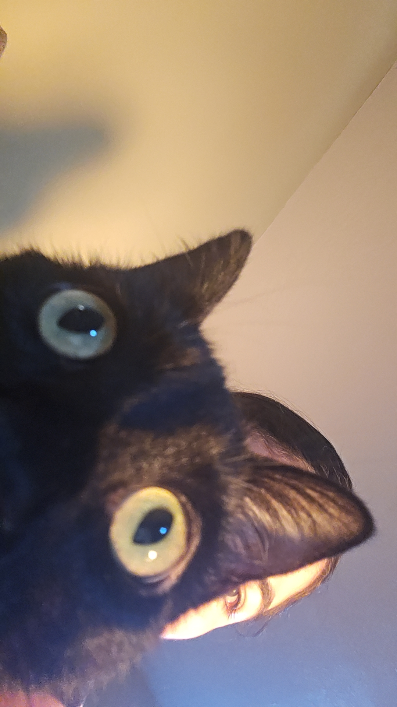
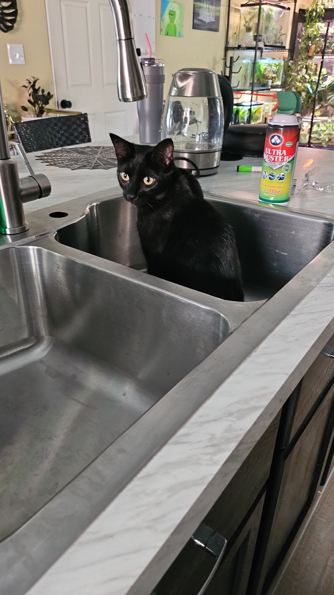

Marceline
(AKA) Marceline
Marcy's Origin
Marceline is a one of kind kitty. She joined our family in January of 2023. She was 6 months old at the time, but is now 3 1⁄2. We would often spend our weekends visitng family, so poor Bonnie was left by herself.
We decided to adopt Marcy after almost a year of frequently leaving Bonnie alone, so she could have a friend to keep her company. Marceline was 6 months old when we adopted her. She was found on the side of the road with 4 other siblings. Their mom had been found run over, so her and her siblings were left to fend for themselves.
Marcy was the last of her siblings to be adopted and she had been in the shelter for months. Marcy's story, just like Bonnie's, tugged at our heartstrings and we felt we had to get her. So we did!
Marceline is the biggest scaredy cat I've ever met. Every loud sound will send her into a panic, and she does not do well with new people. But she has the biggest heart of all my kitties.
She always wants cuddles, kisses, and to be held (especially if that attention is from my husband).


